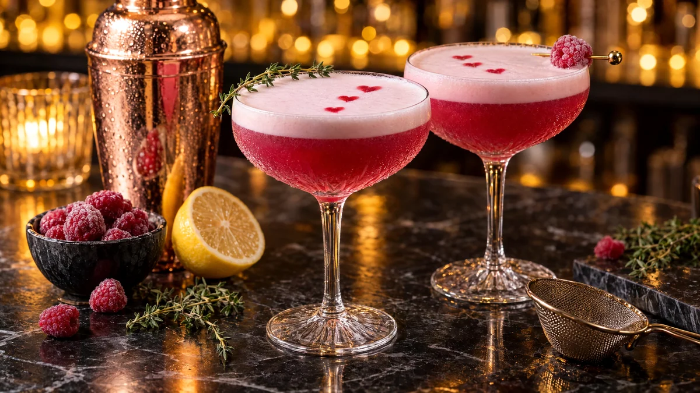

RESTFEST · RECEPTDryck · Mingelmat & tilltugg
Rosa hallonsour med timjan
Frysta hallon, socker, citron och en äggvita, eller kikärtsspad för en vegansk variant. Allt skakas till en djuprosa drink med ett tjockt, sammetslent skum, toppad med en timjankvist och några droppar hallonsirap. Görs med gin eller vodka, eller helt utan sprit.
- Förberedelse
- 15 min + 30 min svalning
- Tillagning
- 10 min
- Portioner
- 2 drinkar (sirap till ca 8)
- Nivå
- Medelsvårt
 Det här behöver du
Det här behöver du
Tryck på + vid det du behöver köpa.
Hallon- och timjansirap
Till 2 drinkar
Alkoholfri variant
- Byt ut spriten mot 8 cl alkoholfri gin eller kallt, osötat grönt te
Till servering
Gör så här
- Koka upp hallon, socker och vatten i en kastrull och låt sjuda i 5 minuter. Mosa bären lätt med en gaffel.
- Ta av kastrullen från värmen, lägg i timjankvistarna och låt dra i 10 minuter.
- Sila sirapen genom en fin sil och pressa ur bären med en sked. Låt sirapen svalna helt. Den håller ca 1 vecka i kylen.
- Ställ två coupeglas eller vinglas i frysen i 10 minuter.
- Häll sprit, citronsaft, sirap och äggvita i en shaker, utan is. Saknar du shaker går en syltburk med tättslutande lock bra.
- Skaka kraftigt i 15 sekunder. Den här torrskakningen gör att äggvitan skummar.
- Fyll shakern med is och skaka kraftigt i ytterligare 15 sekunder, tills shakern är iskall på utsidan.
- Sila drinken genom en tesil ner i de kalla glasen. Vänta en halv minut så att skummet lägger sig i ett tjockt lager överst.
Dekoration och servering
- Droppa 3 små prickar hallonsirap på skummet och dra en tandpetare genom dem, så bildas små hjärtan.
- Lägg en timjankvist över glaskanten, eller ett fryst hallon på en drinkpinne.
- Använd färska ägg och skaka direkt, eller välj kikärtsspad om du vill undvika rå äggvita.
- Servera direkt, skummet är som vackrast de första minuterna.
Mått och ugnstemperaturer
Måtten är svenska (dl, msk, tsk, krm). Ugnstemperaturerna gäller vanlig ugn med över- och undervärme; med varmluft, sänk med 20 grader.